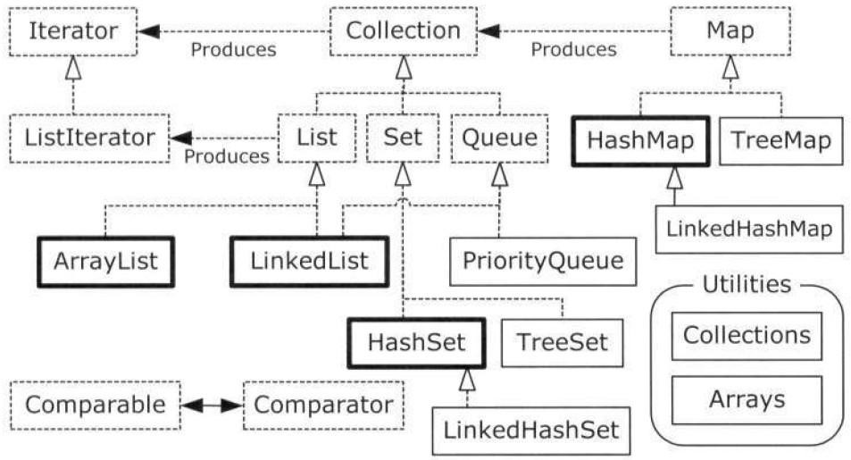

十一、持有对象
11.2 基本概念
容器类类库的用途是“保存对象”，可划分为两个不同概念：
- Collection。一个独立元素的序列，这些元素都服从一条或多条规则。
• List必须按照插入顺序保存元素。
• Set不能有重复元素
• Queue按照排队规则来确定对象产生的顺序（通常与它们被插入的顺序相同） - Map。一组成对的“键值对”对象，允许你使用键来查找值。也被称为”关联数组”或”字典”。某种意义上来说，ArrayList也是一种Map
理想情况下，编写的大部分代码都是在与这些接口打交道，并且唯一需要指定所使用的精确类型的地方就是在创建的时候。可以这样创建一个List：List
apples = new ArrayList 好处在于修改实现时，只需要在创建处修改代码。如把ArrayList改为LinkedList。但是导出类一般具有额外的功能，如果需要使用这些功能，就不能将它们向上转型为更通用的接口。
11.3 添加一组元素
1.Arrays.asList()。public static <T> List<T> asList(T... a)该方法接受一个数组或是一个用逗号分割的元素列表（使用可变参数），并将其转换为一个List对象，然后将其返回。可以直接使用此方法的输出当做一个List，但是在这种情况下，其底层表示是数组，因此不能调整大小，如果试图用add()或delete()方法在这种列表中添加或删除元素，有可能会引发改变数组尺寸的尝试，获得“Unsupported Operation”错误。
另一个限制：会对所产生的List的类型做出最理想的假设，而不关心对它赋予的类型。 例：
|
|
解决办法：使用显式类型参数说明（List<Snow> snow4 = Arrays.<Snow>asList(new Light(), new Heavy());） ，象上面的例子中最后所做的那样。
2. Collections.addAll()
public static <T> boolean addAll(Collection<? super T> c, T... elements)该方法接受一个Collection对象，以及一个数组或是一个用逗号分割的列表，将元素添加到Collection中。先构建一个不包含元素的Collection，然后调用Collections.addAll()这种方式很方便，因此是首选方式。
3. Collection导出类构造器，可以接受另一个Collection，用它来将自身初始化。
4.Collection的addAll()方法，将指定 collection 中的所有元素都添加到此 collection 中（可选操作）。相比使用构造函数初始化，这种方法快的多。
11.4 容器的打印
数组需要用Arrays.toString()，容器不需要任何其它手段 （它们自己的toString()方法就足够了）。
Collection打印出来的内容以[]括住，逗号分隔；
Map则用{}，逗号分隔，键和值用=连接。
HashSet(HashMap)提供最快的查找技术，存储顺序无实际意义；LinkedHashSet(LinkedHashMap)按照被插入的顺序保存元素；
TreeSet(TreeMap)按照比较结果的升序保存对象。
11.5 List
List
| 类 | 随机访问元素 | 插入和移除元素 | 其它 |
|---|---|---|---|
| ArrayList | 快 | 慢 | |
| LinkedList | 慢 | 快 | 更大的特性集 |
常用方法：
| 方法 | 说明 |
|---|---|
| boolean add(E e) | 向列表的尾部添加指定的元素（可选操作）。 |
| void add(int index, E element) | 在列表的指定位置插入指定元素（可选操作）。 |
| boolean addAll(Collection<? extends E> c) | 添加指定 collection 中的所有元素到此列表的结尾，顺序是指定 collection 的迭代器返回这些元素的顺序（可选操作）。 |
| boolean addAll(int index, Collection<? extends E> c) | 将指定 collection 中的所有元素都插入到列表中的指定位置（可选操作）。 |
| void clear() | 从列表中移除所有元素（可选操作）。 |
| boolean contains(Object o) | 如果列表包含指定的元素，则返回 true。 |
| boolean containsAll(Collection<?> c) | 如果列表包含指定 collection 的所有元素，则返回 true。 |
| boolean equals(Object o) | 比较指定的对象与列表是否相等。 |
| E get(int index) | 返回列表中指定位置的元素。 |
| int hashCode() | 返回列表的哈希码值。 |
| int indexOf(Object o) | 返回此列表中第一次出现的指定元素的索引；如果此列表不包含该元素，则返回 -1。 |
| boolean isEmpty() | 如果列表不包含元素，则返回 true。 |
| Iterator iterator() | 返回按适当顺序在列表的元素上进行迭代的迭代器。 |
| int lastIndexOf(Object o) | 返回此列表中最后出现的指定元素的索引；如果列表不包含此元素，则返回 -1。 |
| ListIterator listIterator() | 返回此列表元素的列表迭代器（按适当顺序）。 |
| ListIterator listIterator(int index) | 返回列表中元素的列表迭代器（按适当顺序），从列表的指定位置开始。 |
| E remove(int index) | 移除列表中指定位置的元素（可选操作）。 |
| boolean remove(Object o) | 从此列表中移除第一次出现的指定元素（如果存在）（可选操作）。 |
| boolean removeAll(Collection<?> c) | 从列表中移除指定 collection 中包含的其所有元素（可选操作）。 |
| boolean retainAll(Collection<?> c) | 仅在列表中保留指定 collection 中所包含的元素（可选操作）。交集 |
| E set(int index, E element) | 用指定元素替换列表中指定位置的元素（可选操作）。 |
| int size() | 返回列表中的元素数。 |
| List subList(int fromIndex, int toIndex) | 返回列表中指定的 fromIndex（包括 ）和 toIndex（不包括）之间的部分视图。 |
| Object[] toArray() | 返回按适当顺序包含列表中的所有元素的数组（从第一个元素到最后一个元素）。 |
| T[] toArray(T[] a) | 返回按适当顺序（从第一个元素到最后一个元素）包含列表中所有元素的数组；返回数组的运行时类型是指定数组的运行时类型。 |
• contains()、remove()、retainAll()、removeAll()方法都是基于equals()方法的。不同类，equals()方法定义可能有所不同，比如String只有在内容完全一样的情况下才会是等价的。
• subList()返回的列表的修改都会反映到初始列表中，反之亦然。
• Collections.sort()，Collections.shuffle()方法，进行排序、打乱顺序。
• List重载了一个addAll(int, Collection)方法，可以插入一个新的列表到List中间； Collection的addAll方法追加到结尾。
• toArray()方法：有一个重载；无参数的返回Object[]；传递目标类型的数组，将返回指定类型的数组，传递的数组如果太小，该方法新创建一个合适尺寸的数组。
11.6 迭代器
一种设计模式，在不知道或不关心序列底层结构的情况下，遍历序列，选择每一个元素。迭代器是一种轻量级对象：创建代价低。
Java的Iterator只能单向移动，用法：
- 使用iterator()方法返回Collection的迭代器；迭代器准备返回序列的第一个元素；
- 使用next()方法获取下一个元素；
注意：iterator()返回的迭代器是”准备返回序列的第一个元素”，而不是已经指向了第一个元素，因此要获取第一个元素也得调用一次next()，即c.iterator().next()得到的是第一个元素。 - hasNext()方法检验序列是否还有元素；
- 使用remove()方法删除迭代器返回的最后一个元素。注意，remove()是一种可选方法，依赖于具体实现，但Java标准容器类库都实现了这个方法。
当仅仅是遍历并获取每个元素，用foreach语法更简练。调用remove()之前必须调用next()方法。注意ConcurrentModificationException异常（所谓的fail-fast iterator）。
迭代器的威力：将遍历序列的操作与序列的底层结构分离，统一了对容器的访问方式。
11.6.1 ListIterator
ListIterator：Iterator的子类，只能用于List类的访问，可双向移动；可以返回前一个和后一个元素的索引；可以使用set()方法替换最后访问的元素；listIterator()方法返回指向List开始处的ListIterator；listIterator(n)方法返回指向索引为n的元素处的ListIterator。
11.7 LinkedList
LinkedList添加了一些可以使其用于栈、队列或双端队列的方法。
某些方法只是别名，或者只存在些许差异，以使得它们在特定用法的上下文环境中更加适用（特别是在Queue中）。
• getFirst()和element()方法完全相同，都返回列表的头，而并不移除它，如果List为空，抛出NoSuchElementException；peek()方法与他们基本相同，只是列表为空时返回null。
• removeFirst()与remove()方法相同，移除并返回列表的头，List为空，抛出NoSuchElementException；poll()方法只是在列表为空时返回null。
• offer()、add()、addLast()相同，都将某个元素插入到列表的尾端。
• addFirst()将元素插入到列表的头。
• removeLast()移除并返回列表的最后一个元素。
11.8 Stack
java.util中的Stack类采用了继承LinkedList的方式实现，实际上使用组合实现更好。
|
|
11.9 Set
查找是Set最重要的操作，因此通常选择HashSet，因为快速查找正是它的长项。
Set的接口与Collection接口完全相同，只是行为不同而已，典型的继承与多态。
TreeSet使用红黑树数据结构，HashSet使用散列函数来保存对象，LinkedHashSet也使用散列来优化查找速度，但看起来使用链表来维护元素的插入顺序。
TreeSet默认按照字典序（lexicographically）排序，如果需要改变排序方法，可将比较器传给TreeSet构造器，如String.CASE_INSENTIVE_ORDER（按照字母表顺序alphabetically）。
11.10 Map
get(key)返回key所对应的值，如果key不在Map中，返回null。
containKey()和containValue()方法。
多维Map：值为Map或者别的Array、Collections。
Map可以返回它的键的Set（keySet()方法），它的值的Collection（values()方法），或者它的键值对的Set（entrySet()）。
11.11 Queue
Queue常被用来可靠、安全地传输对象， 如从程序的一个区域传输到另一个区域，或者并行编程中从一个任务传输给另一个任务。
LinkedList实现了Queue接口，因此可用作Queue的一种实现（向上转型为Queue） 。
插入队尾：offer()
查询并返回队头：
peek()：队列为空时返回null
element()：队列空的时候抛出异常NoSuchElementException
移除并返回队头：
poll()：队列为空时返回null
remove()：队列空的时候抛出异常NoSuchElementException
11.11.1 PriorityQueue
队列规则：给定一组队列中的元素，确定下一个弹出队列的元素的规则 。FIFO是典型的一种规则，声明的是下一个元素应该是等待时间最长的元素。
优先级队列：下一个元素是最需要的元素（优先级最高的元素）。 Java SE5添加了这种队列。
offer()插入一个对象到PriorityQueue时，会在队列中被排序 （实际上依赖于具体实现，典型的是插入时排序，但也可以在移除时选择最重要的元素，如果对象的优先级在队列等待时可以改变，那算法的选择就很重要）。默认排序使用对象的自然顺序，但可以通过提供Comparator（如Collections.reverseOrder()，Java SE5）改变这个顺序。peek()、poll()和remove()可以获得优先级最高的元素 （对于内置类型，最小值拥有最高优先级）。
如果要在PriorityQueue使用自定义类型，就需要添加额外的功能以提供自然顺序，或者提供自己的Comparator。
11.12 Collection和Iterator
Collection被认为是一个“附属接口”即因为要表示其它若干个接口的共性而出现的接口。
通过针对接口而非具体实现编写代码，我们的代码可以应用于更多的对象类型。
实现Collection接口可以通过继承AbstractCollection，但必须实现Iterator()和size()；如果类继承自其它类，就必须实现完整的Collection，但此时实现Iterator()似乎是一种更明智的选择 ，因为生成Iterator是将队列与使用队列的方法连接在一起耦合度最小的方式，并且与实现Collection相比，在序列类上所施加的约束也少得多。
11.13 Foreach与迭代器
foreach可以用于数组，也可以用于Collection对象。因为Collection对象实现了Iterable接口（Java SE5引入，包含一个产生Iterator的iterator()方法）。也就是说，foreach可以用于数组和实现了Iterable接口的类（数组并不是Iterable）。
当类需要提供多种在foreach语句使用的方法时，可以采用适配器方法的惯用法。当已经拥有一个接口并需要另一个接口时，就可以编写适配器。例如，想在默认前向迭代器的基础上，添加产生反向迭代器的能力，此时不能使用覆盖，而是应该添加一个能够产生Iterable对象的方法，该对象可以用于foreach语句，像这样
|
|
通过这种方法，可以创建不同行为多个迭代器，如随机访问random()等。
意识到Arrays.asList()产生的List对象会使用底层数组作为其物理实现是很重要的。下面的代码直接使用Arrays.asList()返回的List，Collections.shuffle(stringList);原来的数组也会改变。
|
|
新程序中不应该使用过时的Vector、Hashtable和Stack。

点线框表示接口，实线框表示普通的（具体的）类。带有空心箭头的点线表示一个特定的类实现了一个接口，实心箭头表示某个类可以生成箭头所指向的对象。